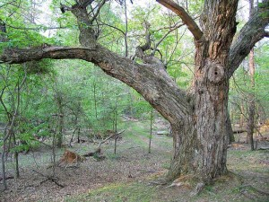
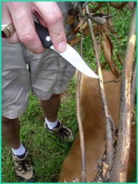
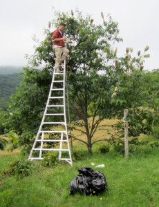

posted: 5/09/2014
The Kron Japanese Chestnut
The Kron Japanese Chestnut Tree At Morrow Mountain State Park

{kind=link}
Kron chestnut - credit Phil W. Lowder
The large chestnut tree at the Kron Farm of Morrow Mountain State Park is a Japanese chestnut, Castanea crenata (Photo 1). Japanese chestnut seed were first imported to Connecticut in 1876, and nurseries began distributing seed and seedlings in the US shortly thereafter. It is very likely that Dr. Kron or his two daughters, enthusiastic botanists, got some of these seeds for planting in their farm in North Carolina in the late 1800's or early 1900's. Other large Japanese chestnut trees can be found at Fort Defiance, General Lenoir's plantation in Caldwell County, NC, and in Shelley Lake Park in Raleigh, NC. Japanese chestnut trees have very large nuts, although they are difficult to peel.

{kind=link}
root rot lesions discolor chestnut
stem credit Steve Jeffers, Clemson University
stem credit Steve Jeffers, Clemson University
The Kron Japanese chestnut tree is now being used in scientific research to discover genes for resistance to root rot caused by Phytophthora cinnamomi. This root rot disease of chestnut is called "Ink Disease" in Europe, because a black ooze comes out of freshly-cut stems of infected chestnut seedlings (Photo 2).
Neither American chestnut (C. dentata) nor European chestnut (C. sativa) are resistant to Ink Disease, but the Asian species of chestnut, including Japanese chestnut are resistant. Crosses have been made between the Kron Japanese chestnut and an American chestnut tree, and some of the resulting "F1" trees, which are 50% American and 50% Japanese chestnut, are now flowering (Photo 3).

{kind=link}
Matthew Egan pollinates an F1
tree from a cross of the Kron
Japanese chestnut by an
Americanchestnut tree.
credit Paul Sisco
tree from a cross of the Kron
Japanese chestnut by an
Americanchestnut tree.
credit Paul Sisco
These F1 trees have subsequently been "backcrossed" to American chestnut, creating families of seedlings some of which are resistant and some of which are susceptible to Ink Disease. By doing DNA analysis of resistant and susceptible seedlings, scientists at Clemson University and the University of Kentucky will be able to pinpoint the genes from Japanese chestnut that confer resistance to root rot. A complete DNA sequence of the Kron Japanese chestnut is also being done at The Pennsylvania State University to compare to the DNA sequences of American, European, and Chinese chestnut (C. mollissima).
Dr. Kron and his daughters would be very pleased to see their large specimen Japanese chestnut tree being used in such important scientific research over 100 years after it was planted!
by Paul Sisco, Ph.D.
For information about the American Chestnut Foundation visit the Carolinas Chapter.